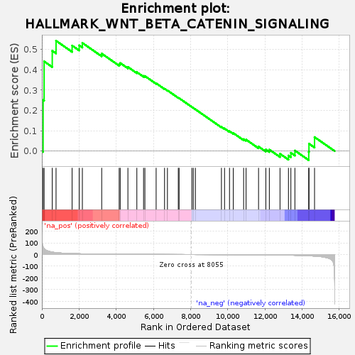
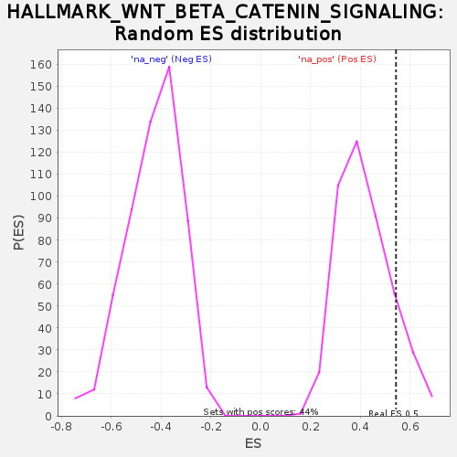

| | | Dataset | DiseaseStatus_ctr_vs_case |
| Phenotype | NoPhenotypeAvailable |
| Upregulated in class | na_pos |
| GeneSet | HALLMARK_WNT_BETA_CATENIN_SIGNALING |
| Enrichment Score (ES) | 0.5432648 |
| Normalized Enrichment Score (NES) | 1.3023716 |
| Nominal p-value | 0.123853214 |
| FDR q-value | 0.16663289 |
| FWER p-Value | 0.787 |
Table: GSEA Results Summary

Fig 1: Enrichment plot: HALLMARK_WNT_BETA_CATENIN_SIGNALING
Profile of the Running ES Score & Positions of GeneSet Members on the Rank Ordered List
| SYMBOL | RANK IN GENE LIST | RANK METRIC SCORE | RUNNING ES | CORE ENRICHMENT | | 1 | MYC | 65 | 65.969 | 0.2513 | Yes |
| 2 | WNT5B | 120 | 50.043 | 0.4417 | Yes |
| 3 | TP53 | 558 | 20.701 | 0.4940 | Yes |
| 4 | MAML1 | 762 | 16.053 | 0.5433 | Yes |
| 5 | NCSTN | 1627 | 8.089 | 0.5196 | No |
| 6 | HDAC2 | 2008 | 6.512 | 0.5207 | No |
| 7 | NOTCH1 | 2179 | 5.883 | 0.5326 | No |
| 8 | NCOR2 | 3219 | 3.504 | 0.4801 | No |
| 9 | AXIN1 | 4159 | 2.199 | 0.4289 | No |
| 10 | NKD1 | 4215 | 2.144 | 0.4337 | No |
| 11 | JAG1 | 4629 | 1.733 | 0.4141 | No |
| 12 | RBPJ | 5110 | 1.344 | 0.3888 | No |
| 13 | HEY1 | 5471 | 1.088 | 0.3701 | No |
| 14 | SKP2 | 5544 | 1.039 | 0.3695 | No |
| 15 | PPARD | 6148 | 0.700 | 0.3339 | No |
| 16 | ADAM17 | 6601 | 0.483 | 0.3070 | No |
| 17 | CTNNB1 | 6756 | 0.425 | 0.2989 | No |
| 18 | LEF1 | 7340 | 0.214 | 0.2626 | No |
| 19 | CUL1 | 7383 | 0.204 | 0.2607 | No |
| 20 | KAT2A | 8071 | -0.006 | 0.2170 | No |
| 21 | PTCH1 | 8147 | -0.032 | 0.2124 | No |
| 22 | HDAC5 | 8260 | -0.080 | 0.2056 | No |
| 23 | FZD1 | 9662 | -0.643 | 0.1189 | No |
| 24 | JAG2 | 9829 | -0.733 | 0.1112 | No |
| 25 | GNAI1 | 10096 | -0.884 | 0.0977 | No |
| 26 | CSNK1E | 10300 | -1.006 | 0.0887 | No |
| 27 | CCND2 | 10857 | -1.405 | 0.0588 | No |
| 28 | TCF7 | 10988 | -1.519 | 0.0564 | No |
| 29 | HDAC11 | 11659 | -2.181 | 0.0222 | No |
| 30 | FRAT1 | 12051 | -2.668 | 0.0076 | No |
| 31 | HEY2 | 12240 | -2.973 | 0.0072 | No |
| 32 | FZD8 | 12814 | -4.093 | -0.0134 | No |
| 33 | NUMB | 13268 | -5.236 | -0.0220 | No |
| 34 | DKK1 | 13399 | -5.623 | -0.0084 | No |
| 35 | PSEN2 | 13615 | -6.384 | 0.0026 | No |
| 36 | AXIN2 | 14360 | -10.509 | -0.0040 | No |
| 37 | DVL2 | 14373 | -10.615 | 0.0363 | No |
| 38 | NOTCH4 | 14672 | -13.329 | 0.0690 | No |
Table: GSEA details [plain text format]

Fig 2: HALLMARK_WNT_BETA_CATENIN_SIGNALING: Random ES distribution
Gene set null distribution of ES for HALLMARK_WNT_BETA_CATENIN_SIGNALING